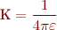

Mesura de paràmetres elèctrics. Fonts d'alimentació
En aquest apartat es donarà una visió general del funcionament i mesurament de l’electricitat. Per a això se n’estudiarà el fenomen natural, com també els aparells que s’utilitzen per a fer-ne mesures qualitatives. L’electricitat es mesura amb aparells que ens permeten avaluar el voltatge, intensitat i potència dels circuits i aparells electrònics. Aquesta informació ens permetrà abordar amb coneixement de causa els components que conformen un ordinador personal i que estan relacionats amb l’electricitat i el subministrament d’energia, com són la font d’alimentació i els components informàtics que se n’alimenten.
Fonaments d'electricitat
Així, per a ser capaços de reparar ordinadors personals en totes les seves parts funcionals, heu de comprendre el fenomen elèctric i conèixer els diferents senyals elèctrics que es poden mesurar en un ordinador personal, des de la font d’alimentació fins als valors que trobarem en els circuits integrats. Els valors que utilitzarem amb més freqüència i que s’utilitzen habitualment per a caracteritzar els components informàtics són el voltatge, la intensitat i la potència.
L'electricitat i els senyals elèctrics
L’electricitat és un fenomen físic originat per càrregues estàtiques o en moviment i per la seva interacció. Quan una càrrega es troba en repòs produeix forces sobre d’altres situades al seu voltant. Si la càrrega es desplaça, també produeix forces magnètiques. Hi ha dos tipus de càrregues elèctriques, anomenades positives i negatives.
L’electricitat està present en algunes partícules subatòmiques. La partícula fonamental més lleugera que porta càrrega elèctrica és l’electró, que transporta una unitat de càrrega negativa. En circumstàncies normals, els àtoms contenen electrons, i sovint els que estan més allunyats del nucli es desprenen amb molta facilitat. En algunes substàncies, com els metalls, proliferen els electrons lliures. Un àtom normal té quantitats iguals de càrrega elèctrica positiva i negativa, per tant, és elèctricament neutre. La quantitat de càrrega transportada per tots els electrons de l’àtom, que per convenció és càrrega negativa, es troba equilibrada per la càrrega positiva localitzada al nucli. D’aquesta manera si un cos conté un excés d’electrons queda carregat negativament. Si al contrari el cos té una absència d’electrons, queda carregat positivament, perquè hi ha més càrregues positives al nucli.
Constitució de la matèria i estructura atòmica
Per a estudiar la naturalesa de l’electricitat i els fenòmens relacionats amb aquesta, cal conèixer, encara que sigui de manera elemental, la constitució de la matèria. La matèria està formada per partícules.
Partícula
La partícula es considera la part més petita que resulta quan es descompon un cos per procediments mecànics.
Vegem-ne un exemple. Si agafem una pedra de sucre i la triturem en un morter, obtindrem una mena de pols molt fina, de manera que encara que continuem picant no aconseguirem reduir-ne la grandària. Si tastem aquesta pols comprovarem que té el mateix gust, ja que continua essent sucre.
Aquestes partícules de sucre ja no es poden fraccionar utilitzant procediments mecànics (cops, fregaments, etc.), però sí que es pot fer amb un altre tipus de procediments. Per exemple, si agafem una quantitat d’aquesta pols de sucre, la dipositem en un got d’aigua i l’agitem, veurem que aparentment ha desaparegut, les partícules s’han dividit en molècules d’una grandària tan petita que són inapreciables a simple vista. Aquest procés també és un fenomen físic, ja que el sucre és present en la dissolució, com ho demostra el fet que l’aigua té un gust dolç.
Molècula
La molècula és la part més petita que resulta de la descomposició d’un cos per procediments físics.
La molècula, al seu torn, es pot fraccionar mitjançant fenòmens químics en trossos més petits, anomenats àtoms, però el resultant d’aquest fraccionament, en el nostre exemple, ja no és sucre, sinó altres cossos de naturalesa distinta.
Àtom
L’àtom és la part més petita que resulta de la descomposició d’un cos per procediments químics.
L’àtom, en un principi considerat indivisible, està format per diferents parts, tal com podeu veure en la figura.
- Nucli, que està format per dos tipus d’elements:
- Protó, que és la part de l’àtom que té una càrrega elèctrica positiva, que s’agafa com a unitat, i una massa que també s’agafa com a unitat.
- Neutró, que és la partícula amb la mateixa massa que el protó però que no té càrrega elèctrica.
- Òrbites, on giren, al voltant del nucli, els electrons.
Els electrons són partícules atòmiques amb la mateixa càrrega elèctrica que el protó però de signe contrari, és a dir, negatiu, i amb una massa pràcticament insignificant comparada amb la del protó o la del neutró (recordeu que les masses del protó i del neutró són iguals).
Cal tenir present que, des del punt de vista elèctric, la característica que ens interessa és la càrrega elèctrica de la partícula, i no pas la seva massa. Com a resum, observeu la taula.
| Nom | Càrrega elèctrica | Massa |
|---|---|---|
| Protó | +1 | 1 |
| Neutró | 0 | 1 |
| Electró | -1 | ≈0 |
En condicions normals, l’àtom és elèctricament neutre, és a dir, tendeix a tenir el mateix nombre d’electrons que de protons. Ara bé, en determinades circumstàncies, els àtoms, i en conseqüència els cossos formats per aquests àtoms, poden guanyar o perdre càrregues elèctriques i donar lloc a dos tipus d’electricitat:
- Electricitat positiva, quan els cossos han perdut electrons.
- Electricitat negativa, quan els cossos han guanyat electrons.
Fixeu-vos en el detall que parlem de guanyar o perdre electrons, ja que només aquests tenen la possibilitat de desplaçar-se, ja que els protons estan tancats al nucli.
Electrització per fricció
A l’antiga Grècia ja coneixien les propietats d’alguns cossos, com l’ambre, anomenat en grec elektron, d’atraure petits trossos de paper, suro, plomes, etc. immediatament després d’haver estat fregats. Altres tipus de cossos amb aquestes propietats són el vidre, la resina, l’ebonita.
Quan dos cossos es freguen l’un amb l’altre es pot establir entre ells una transferència d’electrons. Si freguem una barra de plàstic amb un drap de llana, el plàstic quedarà carregat negativament (electricitat negativa), jque agafarà electrons de la llana. En canvi, si freguem una barra de vidre amb un mocador de seda, el vidre quedarà carregat positivament (electricitat positiva), ja que haurà cedit electrons a la seda.
Tot fenomen d’electrització és conseqüència d’una transferència d’electrons; les càrregues elèctriques no es creen ni es destrueixen, sinó que passen d’un cos a un altre, de manera que tots dos cossos queden electritzats.
Amb les barres de plàstic i vidre carregades elèctricament, podem comprovar que si apropem dues barres de plàstic o dues barres de vidre sorgeix entre elles una força de repulsió; en canvi, si apropem una barra de cada tipus apareix una força d’atracció. Podeu veure una representació gràfica d’aquest fenomen en la figura.
Càrregues elèctriques del mateix signe es repel·len i càrregues de signe diferent s’atreuen.
Càrrega elèctrica
La càrrega elèctrica es defineix com la quantitat d’electrons que té un cos tant per defecte com per excés. Es representa amb la lletra q.
La càrrega elèctrica, també anomenada quantitat d’electricitat, és una magnitud física fonamental. En principi semblaria lògic pensar que la unitat de la càrrega elèctrica hauria de ser l’electró; ara bé, com que és d’un valor molt petit es va optar per utilitzar un múltiple, el coulomb.
El coulomb és la unitat de càrrega elèctrica i equival aproximadament a 6,2 × 1018 electrons.
Llei de Coulomb
L’enginyer francès Charles-Augustin de Coulomb va descobrir que la força d’atracció o repulsió entre cossos electritzats és directament proporcional al producte de les càrregues i inversament proporcional al quadrat de la distància entre ells.
Coulomb (1736-1806)
Enginyer militar. Estudiant les atraccions i repulsions entre els pols de dues brúixoles, es va adonar que els cossos electritzats segueixen la mateixa llei, i que passa el mateix entre pols magnètics de dos imants.
En què:
- F és la força d’atracció o repulsió entre càrregues.
- K és la constant de proporcionalitat.
- q i q’ són les càrregues elèctriques.
- d és la distància entre les càrregues.
La força d’atracció o repulsió depèn del medi en què estan immerses les càrregues: no és el mateix que siguin a l’aire que, per exemple, a l’aigua. Per això s’utilitza la constant de proporcionalitat, que és determinada pel medi i, en concret, per la seva constant dielèctrica, de manera que:
ε = Constant dielèctrica del medi

En el sistema internacional de mesures:
Unitats de mesura
La força d’atracció o repulsió entre càrregues es mesura en newtons (N); les càrregues elèctriques es mesuren en coulombs (C); la distància entre les càrregues es mesura en metres (m).
Exemple de càlcul de la força d'atracció o repulsió entre càrregues
En l’àtom d’hidrogen l’electró està separat del protó per una distància de:
La càrrega de l’electró és:
La constant de proporcionalitat:
Quina és la força exercida pel protó sobre l'electró?
Solució
Així:
Camp elèctric
Tothom sap que la Terra exerceix una influència anomenada gravitatòria, que es pot apreciar quan, en qualsevol dels seus punts, se situa un cos de prova i se’n mesura el pes, és a dir, la força amb què la Terra l’atreu. Aquesta influència es coneix com a camp gravitatori terrestre. De la mateixa manera, la física introdueix la noció de camp magnètic i també la de camp elèctric o electrostàtic.
S’anomena camp elèctric d’una càrrega q la regió de l’espai, al voltant de la càrrega, en què es manifesten forces d’origen elèctric.
Una manera de comprovar la presència o no de camp elèctric en un punt és col·locant-hi un cos carregat i observant si s’hi exerceix alguna força d’origen elèctric.
Camp elèctric
Si col·loquem una càrrega dins la zona grisa de la figura serà atreta o repel·lida per la càrrega positiva. La zona on es percep l’acció de la càrrega positiva s’anomena camp elèctric.
Els camps elèctrics es representen amb les anomenades línies de força. Aquestes són les trajectòries que seguiria una càrrega elèctrica positiva abandonada lliurement en el camp. Les línies de força tindran el sentit de les càrregues positives a les negatives.
Observeu la figura. Si la càrrega està aïllada i és positiva, les línies de força surten d’aquesta i es dirigeixen cap al límit del camp (figura a). Si, al contrari, la càrrega és negativa, les línies tenen sentit contrari a l’anterior (figura b). En el cas de dos cossos electritzats amb càrregues de signe diferent, les línies de força aniran del positiu al negatiu (figura c). Per acabar, si tots dos cossos estan carregats amb el mateix signe, per exemple positiu, les línies de força es dispersen cap al límit del camp (figura d); si són negatives, tindran el sentit contrari.
Diferència de potencial
S’anomena diferència de potencial, entre dos punts d’un camp elèctric, el treball que cal realitzar sobre la unitat de càrrega per a transportar-la des del primer punt fins al segon.
Si anomenem w el treball, la diferència de potencial :
La unitat de diferència de potencial serà la que hi ha entre dos punts d’un camp elèctric de manera que per traslladar un coulomb de càrrega elèctrica, la força que calgui realitzar sigui d’un joule. Aquesta unitat s’anomena volt.
La diferència de potencial també rep el nom de tensió.
Si dos cossos carregats elèctricament, amb diferent potencial, s’uneixen mitjançant un fil conductor, es produeix un pas de càrrega fins que tots dos cossos, i el conductor que els uneix, queden al mateix potencial, anomenat potencial d’equilibri. Recordeu que els àtoms i els cossos tenen tendència a romandre en estat neutre.
El corrent elèctric
El corrent elèctric és el desplaçament continu de càrregues (electrons) al llarg d’un conductor.
Aquest desplaçament d’electrons es mantindrà sempre que hi hagi una diferència de potencial entre els seus extrems.
El corrent elèctric pot produir diferents efectes:
- Tèrmic o calorífic. Pensem, per exemple, en les estufes elèctriques, que tan sols s’han d’endollar perquè comencin a escalfar, o bé en les làmpades d’incandescència, en què el pas del corrent elèctric en travessar un filament produeix lluminositat.
- Magnètic. Quan un corrent elèctric passa per un conductor es crea un camp magnètic. Trobem un exemple en els motors.
- Químic. El més important és l’electròlisi que s’aplica en determinats processos industrials.
El circuit elèctric
- El circuit elèctric es pot veure com a circuit hidràulic
Començarem fent un símil amb un circuit hidràulic. Observeu la figura adjacent. Com que els dos dipòsits estan a diferent nivell (hi ha una diferència de potencial) s’estableix un corrent d’aigua des del dipòsit A fins al dipòsit B fins que tots dos estiguin al mateix nivell. Quan això es produeixi, com que no hi haurà una diferència de potencial, el corrent d’aigua desapareixerà.
Si a aquest símil hidràulic, en què heu pogut comprovar que quan els dos dipòsits estan al mateix nivell el corrent desapareix, afegim algun element que mantingui la diferència de potencial, el corrent d’aigua des del dipòsit A fins al B no s’aturarà. Aquest element, que podria ser una bomba, també el podríem anomenar generador de diferència de potencial. En la figura adjacent es representa la modificació plantejada.
- La bomba hidràulica representa el generador elèctricFigura 6. La bomba hidràulica representa el generador elèctric
Observeu en la figura que el comportament del circuit elèctric és molt semblant a l’hidràulic.
El circuit elèctric està format per una pila, que fa les funcions de generador mantenint la diferència de potencial, i uns elements conductors que connecten un pol del generador amb l’element receptor (el que transforma l’energia elèctrica en altres formes d’energia), i aquest amb l’altre pol del generador, i d’aquesta manera es tanca el circuit. Els electrons es desplacen des del pol negatiu fins al positiu (sentit real del corrent elèctric).
Sentits convencional i real del corrent elèctric
Abans de conèixer els electrons, els físics creien que eren les càrregues positives les que es movien de positiu a negatiu, per la qual cosa van assignar al pol positiu un potencial més gran que al negatiu com si es tractés d’un circuit hidràulic. Després es va veure que la realitat és diferent, és a dir, que el que es mou són els electrons.
El fet d’utilitzar el sentit real o el convencional no afecta l’estudi del corrent elèctric; per aquest motiu, podeu trobar publicacions en què s’utilitza el sentit real (de negatiu a positiu) o el sentit convencional (de positiu a negatiu).
No n’hi ha prou de disposar dels elements generador, receptor i conductors: a més és condició indispensable que el circuit estigui tancat. Mireu l’exemple de la figura.
Generadors elèctrics
- Centrals tèrmiques
Interruptor obert i tancat
En el circuit a l’interruptor obert impedeix el pas del corrent. En el circuit b l’interruptor tanca el circuit i permet el pas del corrent.
Els generadors elèctrics són elements imprescindibles en qualsevol circuit elèctric. L’energia elèctrica es pot generar de diferents maneres. Segons el tipus de procediment emprat trobem:
- Generadors electromagnètics. Basats en el fet de fer girar un conductor dins d’un camp magnètic. El gir d’aquest conductor es pot fer aprofitant un salt d’aigua (centrals hidroelèctriques), la força del vapor d’aigua (centrals tèrmiques de diferents tipus de combustible, sòlid, líquid, gas, nuclear, etc.) o la força del vent (centrals eòliques).
- Generadors solars. Utilitzen cèl·lules formades per elements semiconductors que tenen la propietat de, sotmetent-los a l’exposició de la llum solar, ser capaços de generar unes petites diferències de potencial entre els seus extrems. La combinació de múltiples cèl·lules permet aconseguir diferències de potencial d’uns valors suficients per a poder ser utilitzades.
- Generadors químics. Són els coneguts com a piles i bateries, que es basen en reaccions químiques d’oxidació i reducció.
- Plaques solars
- Piles i bateries
En qualsevol cas, cal tenir present el principi de conservació de l’energia. Recordeu que, segons el primer principi de la termodinàmica, l’energia no es crea ni es destrueix sinó que només es transforma.
Conductors
Els materials que connecten els diferents elements del circuit elèctric han de facilitar el pas del corrent elèctric o, més ben dit, n’han de dificultar el pas el mínim possible. Tots els metalls són bons conductors, tot i que hi ha diferència entre ells.
Magnituds elèctriques i les seves unitats
Diferents magnituds, amb les seves respectives unitats i múltiples i submúltiples, intervenen en els circuits elèctrics. Aquestes magnituds i les relacions entre elles són les que permeten fer l’anàlisi dels circuits elèctrics.
De vegades els tres termes diferència de potencial, força electromotriu i tensió elèctrica es barregen, en part perquè tots tres utilitzen la mateixa unitat; ara els veureu separadament.
Diferència de potencial (ddp)
Es pot considerar com la primera condició perquè es produeixi un corrent elèctric. En el símil hidràulic equival a tenir una diferència de nivell entre els dipòsits.
Si tornem al circuit hidràulic de la figura 6, la bomba tenia per objecte establir una diferència de pressió entre tots dos dipòsits perquè l’aigua pogués circular en el sentit de més pressió (dipòsit A) a menys pressió (dipòsit B).
De la mateixa manera, la pila del circuit de la figura té per objecte establir una diferència de tensió entre els extrems del circuit. Si no hi ha aquesta diferència de tensió elèctrica el corrent no circula.
Aquesta diferència de tensió elèctrica s’anomena normalment diferència de potencial (ddp), la seva unitat en el sistema internacional (SI) és el volt i es representa de manera abreujada amb una V majúscula.
Força electromotriu (fem)
Aquesta magnitud va associada de manera directa amb els generadors.
S’anomena força electromotriu (fem) d’un generador l’energia que es proporciona per a fer circular una quantitat de corrent d’1 coulomb pel circuit tancat. D’una manera més entenedora podríem dir que és l’energia necessària per a mantenir la circulació dels electrons pel circuit.
La força electromotriu s’acostuma a representar amb la lletra E i es mesura, igual que la diferència de potencial, en volts (V).
Tensió elèctrica
- La diferència de tensió entre els puntsa ib s'anomena voltatge
Es pot definir com la diferència de nivell elèctric que hi ha entre dos punts qualsevol d’un circuit elèctric. S’acostuma a representar com a V. La tensió es mesura també en volts (V). L’aparell per a mesurar els nivells de tensió s’anomena voltímetre.
De vegades cal indicar valors molt més grans que la unitat (volt) o, al contrari, molt més petits, i això ens obliga a utilitzar múltiples i submúltiples.
A la taula podeu consultar els valors equivalents en volts d’aquests múltiples i submúltiples.
| Múltiples | Submúltiples | Equivalència |
|---|---|---|
| Megavolt (MV) | 106 V | |
| Quilovolt (kV) | 103 V | |
| mil·livolt (mV) | 10-3 V | |
| microvolt (µV) | 10-6 V | |
| nanovolt (nV) | 10-9 V | |
| picovolt (pV) | 10-12 V |
220 kV = 220 × 103 V = 220.000 V
135 mV = 135 × 10-3 V = 0,135 V
350 µV = 350 × 10-6 V = 0,350 mV = 0,000350 V
Tensió, múltiples i submúltiples
Dels múltiples, el més emprat és el kV, i només quan parlem dels nivells de les línies de mitjana i alta tensió utilitzades pel transport de l’energia elèctrica. Dels submúltiples, els més emprats són el mV i el µV, especialment en circuits electrònics i en senyals de comunicacions. El nV i el pV rarament es referencien.
Intensitat del corrent
- La intensitat per al conductor 2 és més gran que per al conductor 1
S’anomena intensitat del corrent elèctric o corrent elèctric la càrrega elèctrica que travessa una secció d’un conductor en la unitat de temps.
La unitat del corrent elèctric en el sistema internacional és l’ampere (A), que és la intensitat d’un corrent que transporta un coulomb en cada segon.
La intensitat del corrent elèctric en un circuit que no tingui bifurcacions és sempre la mateixa en qualsevol punt del circuit, ja que el nombre d’electrons que passen en un segon per un punt del circuit serà el mateix si els mesurem en un altre punt del mateix circuit; així, en la figura, el corrent en el punt A i en el punt B és el mateix.
Quan parlem de circuits elèctrics domèstics, els que hi ha a les instal·lacions dels nostres habitatges, la unitat ampere és una unitat força adequada. Ara bé, quan parlem de circuits d’equips electrònics, en la majoria dels casos és una unitat força gran i, per aquest motiu, en aquest cas només farem referència a submúltiples. A la taula hi podeu consultar els valors equivalents dels submúltiples de l’ampere. L’aparell per mesurar la quantitat de corrent s’anomena amperímetre.
| Submúltiples | Equivalència |
|---|---|
| mil·liamper (mA) | 10-3 A |
| microamper (µA) | 10-6 A |
| nanoamper (nA) | 10-9 A |
| picoamper (pA) | 10-12 A |
Una magnitud associada al corrent elèctric és la densitat de corrent (J), que és la relació entre el corrent elèctric que circula i la secció del conductor.
Exemple de càlcul de la densitat del corrent
Calculeu la densitat de corrent en un conductor de 2,5 mm² si el corrent que circula és de 5 amperes.
Si apliquem la fórmula de la densitat de corrent (J) tindrem:
Corrent elèctric sense bifurcacions
Per a entendre el concepte de corrent elèctric sense bifurcacions, us pot ajudar pensar en un passadís sense portes als costats i sense possibilitat de tirar enrere.
La densitat màxima de corrent que pot suportar un conductor dependrà:
- del material amb què hagi estat fabricat,
- de la seva secció i
- de si es tracta d’un conductor amb coberta d’aïllant o sense.
A tall d’exemple, en la taula s’indica la densitat màxima de corrent en conductors de coure, sense aïllament i amb aïllament.
| Secció mm² | Conductor sense aïllament | Conductor aïllat (plàstic) | Secció mm² | Conductor sense aïllament | Conductor aïllat (plàstic) |
|---|---|---|---|---|---|
| 0,75 | 8,0 | 6,0 | 50 | 3,0 | 2,2 |
| 1,50 | 7,5 | 5,6 | 95 | 2,1 | 1,6 |
| 4 | 6,1 | 4,6 | 120 | 1,9 | 1,4 |
| 10 | 5,1 | 3,8 | 200 | 1,7 | 1,3 |
| 25 | 3,8 | 2,8 | 400 | 1,5 | 1,1 |
En principi, i segons la taula, si per exemple es tractés d’un conductor de coure d’1,5 mm² de secció i amb aïllament de tipus plàstic, el corrent màxim que podria suportar seria: 1,5 mm² × 5,6 A/mm² = 8,4 amperes
Tot i això, també caldria tenir present si es tracta d’un conductor exposat a l’aire o encastat directament o sota la protecció d’un tub. En qualsevol cas, el fabricant ens donarà tots aquests paràmetres.
- Cables elèctrics. Han de ser conductors per transportar el corrent amb les mínimes pèrdues.
Resistència
Els materials que connecten els diferents elements del circuit han de dificultar el mínim possible el pas del corrent elèctric. Els metalls, en general, tenen aquesta característica, per això es diu que són bons conductors.
Conductors i aïllants perfectes
No hi ha conductors ni aïllants perfectes, sinó que depenen de les circumstàncies. L’aire és un aïllant, entre els dos cables d’una línia d’alta tensió no salta l’arc elèctric (no es tanca el circuit), en canvi, si es tracta d’una tempesta amb una gran càrrega elèctrica, sí que salta l’arc entre el núvol i la terra (llamp). L’aire és un aïllant, però no és un aïllant perfecte.
Des del punt de vista d’un circuit elèctric, els materials es classifiquen, bàsicament, en els següents:
- Conductors: són els que no ofereixen gaire resistència al pas del corrent elèctric.
- Aïllants: són els que ofereixen molta resistència al pas del corrent elèctric.
Semiconductors
Encara que, des del punt de vista d’un circuit elèctric, classifiquem els materials en conductors i aïllants, hi ha un tercer grup, anomenat semiconductors.
Els semiconductors no són materials mig conductors o mig aïllants, sinó que en determinades circumstàncies es comporten com a conductors i en d’altres, com a aïllants.
La resistència (R) és la dificultat que ofereix un circuit elèctric al pas d’un corrent elèctric. La seva unitat és l’ohm ().
Unitat de resistència
De la mateixa manera que hi ha la definició del patró del metre, també es va definir l’ohm patró. Un ohm és la resistència elèctrica d’una columna de mercuri de 106,3 cm de longitud i 1 mm² de secció a la temperatura de 0 °C.
Un ohm és la resistència que, quan en un circuit s’estableix una diferència de potencial d’1 volt, deixa passar un corrent d’1 ampere.
Quan parlem de circuits elèctrics domèstics o industrials, la unitat ohm es pot considerar com una unitat gran; ara bé, en els circuits que formen els equips electrònics trobem molt sovint valors de resistència força més elevats, la qual cosa ens obliga a treballar amb múltiples.
| Múltiples | Equivalència |
|---|---|
| Megaohm (MΩ) | 106 ohm |
| Kiloohm (kΩ) | 103 ohm |
L’aparell per a mesurar la resistència s’anomena ohmímetre o òhmmetre.
En els circuits elèctrics, la resistència no la ofereix només el receptor, sinó que també hi intervenen els conductors.
Resistència dels conductors
La resistència elèctrica d’un conductor és la dificultat que ofereix al pas del corrent elèctric. El seu valor dependrà del material del conductor i serà directament proporcional a la seva longitud (L) i inversament proporcional a la seva secció (S).
És fàcil d’entendre que com més llarg sigui el conductor, i també com més estret, més dificultat tindran els electrons per a desplaçar-se.
Factor de proporcionalitat
La resistivitat o resistència específica depèn del material amb què estigui fet el conductor, ja que cada tipus de material ofereix una dificultat diferent al pas del corrent elèctric.
La constant de proporcionalitat s’anomena resistivitat o resistència específica del conductor, i indica la resistència del conductor (en ohms) per unitat de longitud (en metres) i per unitat de secció (en mm²).
El valor de resistivitat s’acostuma a indicar a la temperatura de 20 ºC, però aquest es pot veure afectat per les variacions de temperatura. Si la resistivitat varia en funció de la temperatura, és evident que això afectarà la resistència del conductor.
En la taula podeu veure la resistivitat d’alguns materials emprats en els circuits elèctrics.
| Material | Resistivitat en | Coeficient de variació amb la temperatura per cada °C |
|---|---|---|
| Argent | 0,016 (1,6 × 10-2) | 0,0037 |
| Coure | 0,017 (1,7 × 10-2) | 0,0039 |
| Alumini | 0,028 (2,8 × 10-2) | 0,0037 |
| Ferro | 0,12 (12 × 10-2) | 0,0047 |
| Plom | 0,22 (22 × 10-2) | 0,0043 |
| Manganina | 0,43 (43 × 10-2) | Negligible |
| Constantà | 0,49 (49 × 10-2) | Negligible |
| Mercuri | 0,94 (94 × 10-2) | 0,00088 |
| Llautó | 7 | 0,0002 |
| Nicrom | 100 | 0,0004 |
| Carbó | 3500 | 0,0005 |
Per a conèixer el coeficient de resistivitat del material a una temperatura diferent de la de referència (20 °C), cal aplicar la fórmula següent:
Resistència i temperatura
Com heu pogut observar en la taula, la resistivitat de tots els materials indicats, tret del carbó (coeficient negatiu), augmenta amb la temperatura, per tant, podem afirmar que la resistència dels conductors augmenta amb la temperatura.
En què:
 és la temperatura a la qual volem conèixer el coeficient de resistivitat;
és la temperatura a la qual volem conèixer el coeficient de resistivitat;- és la resistivitat a 20 °C;
- és el coeficient de variació amb la temperatura;
- t és la diferència de temperatura respecte a 20 °C.
Exemple de càlcul de la resistivitat d'un conductor
Si volem conèixer la resistivitat d’un conductor de coure a una temperatura de 38 °C, aplicant la fórmula tindrem que:
Per acabar aquest apartat podeu veure un exemple de càlcul de la resistència d’un conductor:
Volem conèixer la resistència d’un conductor de coure de secció 1,5 mm² i d’una llargada de 30 m.
Aplicarem la fórmula per calcular la resistència d’un conductor i substituirem les variables pels seus valors.
La resistència d’aquest conductor serà de 0,34; en principi, pot semblar molt baixa, però més endavant veureu que té els seus efectes, ja que com més gran sigui la resistència més gran serà la caiguda de tensió i, per tant, la pèrdua de diferència de potencial en el circuit.
Mesura de paràmetres elèctrics bàsics. Instruments de mesura
Els instruments de mesura elèctrics es basen en la mesura del corrent elèctric a partir del camp magnètic que genera el pas d’aquest corrent.
Galvanòmetre
El galvanòmetre és l’element base dels aparells analògics (amb agulla) de mesures elèctriques. Cada vegada més s’utilitzen aparells digitals, que ens donen la lectura numèrica de la magnitud mesurada.
El galvanòmetre és un instrument d’alta sensibilitat que permet detectar, comparar i mesurar, petits corrents elèctrics.
Un galvanòmetre està format per dues parts:
a) Una part fixa, consistent en un imant permanent, en forma de ferradura que produeix entre els seus pols N i S un camp magnètic uniforme.
b) Una part mòbil, una sèrie d’espires muntades a l’aire, per on passa el corrent, de manera que puguin girar dins del camp magnètic de l’imant permanent.
Quan passa el corrent elèctric, les espires tendeixen a situar-se de manera que les línies de força entrin per la cara sud, on es troba a l’oposició de la torsió del fil, llavors s’estableix un equilibri entre el parell de la força magnètica i el parell de la força de torsió. L’angle format serà més gran com més elevat sigui el corrent. Aquest angle associat a una agulla i una escala graduada ens donarà la mesura del corrent elèctric.
Amb algunes modificacions, aquest galvanòmetre es pot convertir en voltímetre, amperímetre i òhmmetre.
Sobre l’amperímetre, podeu veure consultar la secció Recursos de contingut d’aquesta unitat en el web del crèdit.
En un altre àmbit, un tècnic que hagi de mesurar magnituds elèctriques en el camp de la informàtica haurà de conèixer un aparell com el polímetre, també conegut com a multímetre o verificador per al seu treball diari. En un taller d’electrònica es podrien trobar més aparells, com poden ser l’oscil·loscopi, el generador de funcions o les fonts d’alimentació variables.
Aquest dispositiu permetrà comprovar el funcionament correcte de components fonamentals com la font d’alimentació o l’alimentació elèctrica, i en alguns casos fins i tot el funcionament correcte de components electrònics individuals d’una placa de circuit imprès com pot ser la placa base.
Encara que hi ha molts models de multímetres, el seu funcionament i característiques són molt similars en tots els casos i, per tant, l’aprenentatge de les funcions en un d’aquests aparells ens permetrà manejar sense problemes aparells semblants.
L'oscil·loscopi
És un aparell de mesura que permet visualitzar senyals elèctrics en temps real, tant continus com alterns. Generalment es representa una tensió (eix vertical) en funció del temps (eix horitzontal).
Característiques dels aparells de mesura
Abans d’utilitzar un instrument heu de tenir en compte les característiques de l’aparell que determinaran el mesurament.
Les característiques més importants dels aparells de mesura són les següents:
a) Exactitud: Aproximació amb què la lectura d’un instrument de mesura s’acosta al valor real de la variable mesurada.
b) Precisió: Capacitat d’un instrument de mesura de donar els resultats amb exactitud.
c) Apreciació: Valor de la fracció mínima de la unitat de mesura que es pot llegir en un instrument.
d) Sensibilitat: Resposta d’un instrument respecte a un canvi en la variable mesurada.
Polímetre
El polímetre és un aparell de mesura que pot mesurar diferents magnituds elèctriques com la tensió contínua i alterna, la resistència i la intensitat també contínua i alterna, encara que en l’actualitat hi ha polímetres amb capacitat per a mesurar altres magnituds (capacitats, comprovació de díodes, comprovació de transistors, etc.). Aquest instrument, per la seva exactitud i pel preu, és el preferit dels professionals de l’electrònica.
Tipus de polímetres
Hi ha dos tipus de polímetres, tal com podem veure en la figura:
Hi ha molts models i diferents marques de polímetres.
- Els polímetres analògics són fàcils d’identificar per una agulla que es mou damunt d’una escala i indica el valor de la magnitud mesurada.
- Els polímetres digitals, que són els més utilitzats, s’identifiquen per una pantalla numèrica en què es fa la lectura del valor mesurat.
El polímetre també es coneix com a tester o multímetre.
Comandaments bàsics
Normalment els polímetres disposen del següent:
- Interruptor: per a posar en marxa l’aparell.
- Selector de funcions: per a escollir el tipus de mesura que es realitzarà (resistència, voltatge en corrent altern, corrent continu…).
- Selector d’escala: per a establir el màxim valor que es podrà visualitzar.
- Entrada: per a connectar-hi les puntes de mesura.
Precaucions generals
Per a no deteriorar l’instrument, és molt important respectar la selecció de funcions adequades i escales per a cada mesura. Si no se sap el nivell d’escala a seleccionar inicialment, utilitzarem la més gran i baixarem d’escala progressivament fins a obtenir el resultat.
Tècniques de mesura
Hi ha un seguit de pautes que hem de tenir en compte a l’hora de fer el mesurament, amb un polímetre, de les resistències, tensions i intensitats contínues i alternes en un circuit elèctric. Vegem-les:
a)Mesures de resistències
Les resistències s’han de mesurar sense tensió. Seleccionarem la funció (ohms) i actuarem sobre l’escala fins a obtenir el valor de la mesura (l’opció AC/DC és inoperant i no influeix en la mesura).
Òhmetre: aparell per a mesurar la resistència elèctrica d’un circuit.
b)Mesures d’intensitat o corrent
Per a mesurar la intensitat elèctrica, l’aparell s’ha de connectar interrompent el circuit, fent que el corrent o la intensitat hi circuli. És a dir, l’aparell sempre s’ha de connectar en sèrie.
Amperímetre: aparell que només mesura la intensitat o corrent.
S’ha de seleccionar l’escala d’intensitat (amperes), i s’ha de tenir en compte l’opció AC si voleu mesurar intensitat alterna, i DC si voleu mesurar intensitat contínua.
No s’han de mesurar intensitats més elevades que les que suporta l’instrument.
c)Mesures de tensió
Per a mesurar en un circuit elèctric la tensió, tant alterna com contínua, heu de seleccionar l’escala de tensió (volts) alterna o contínua (AC/DC), segons quina sigui la seva naturalesa, i connectar el polímetre entre els dos punts on volem fer el mesurament. Per tant, per a mesurar a tensions hem de connectar l’aparell en paral·lel.
La diferència de potencial en un circuit elèctric també s’anomena tensió o voltatge.
d)Mesura de capacitats
Les dues potes del condensador s’insereixen en els orificis corresponents del polímetre i situem el selector en l’escala de capacitats.
La mesura només es pot realitzar amb el condensador descarregat, per tant, abans del mesurament l’hem de comprovar.
e)Comprovació de díodes
Seleccionem la funció de comprovació de díodes i apliquem els terminals del polímetre a les potes del díode desconnectat del circuit; en un sentit, ens donarà una resistència pràcticament nul·la, i en l’altre, una resistència molt gran. És freqüent que quan la resistència és baixa, l’aparell ho indiqui amb un xiulet.
La funció de comprovació de díodes també es pot utilitzar per a comprovar continuïtats.
f)Comprovació de transistors
Les tres potes del transistor s’insereixen en els orificis corresponents del polímetre i situem el selector en l’escala de H fe, respectant el seu tipus (NPN o PNP) i els terminals (base, emissor, col·lector). En la pantalla apareix el guany del transistor.
Fonts d'alimentació
La font d’alimentació (figura) és un aparell encarregat de transformar la tensió alterna de la xarxa elèctrica en una tensió contínua.
Utilitzem fonts d’alimentació perquè la majoria de circuits electrònics requereixen una tensió contínua per a alimentar-se; quan no convé utilitzar piles o bateries, hem de recórrer a la tensió alterna de què disposem en els endolls de casa nostra i convertir-la en contínua mitjançant les fonts d’alimentació .
La font d'alimentació d'un ordinador
La font d’alimentació és l’encarregada de subministrar el voltatge continu necessari per a cadascun dels elements que es connecten a l’ordinador, com també la intensitat que necessiten. Rep una tensió alterna de 230 V i 50 Hz de la xarxa de distribució elèctrica i la transforma en una tensió contínua de +5, −5, +12, −12 i +3,3 V (aquesta última només en els models ATX). A part dels circuits electrònics necessaris per a rectificar i estabilitzar la tensió alterna, la font d’alimentació també disposa d’un petit ventilador que refrigera els components i evita que puguin assolir temperatures excessivament elevades que podrien fer-los malbé (figura).
- Interior d'una font d'alimentació
- Detall del ventilador
Els dos tipus de fonts que podem trobar quan obrim un ordinador són AT o ATX. Les fonts d’alimentació AT es van utilitzar fins que va aparèixer el Pentium MMX, moment en què es van començar a utilitzar fonts d’alimentació ATX.
Els connectors a placa base utilitzats en les fonts AT varien dels utilitzats en les fonts ATX, i no són tan segurs, ja que la font s’activa per mitjà d’un interruptor, i en aquest interruptor hi ha un voltatge de 230 V, cosa que comporta un cert risc a l’hora de manipular el PC.
- Cables d'alimentació d'una font AT
La font ATX sempre és activa i, encara que l’ordinador no estigui funcionant, sempre està alimentada amb una tensió petita en estat d’espera.
Les fonts ATX disposen d’un botó connectat a la placa base, la qual s’encarrega d’engegar la font; això ens permet fer connexions/desconnexions per a programari.
En principi, la font ve com una part fixa de la carcassa de l’ordinador. Si haguéssim d’instal·lar-la, n’hi hauria prou a col·locar-la en el buit de la carcassa destinat a aquest efecte, posar els cargols de la part posterior i connectar els diversos cables d’alimentació. En el mateix costat on està situat el ventilador, també hi ha l’endoll del cable que va connectat a la xarxa elèctrica. Aquest endoll mascle té tres connexions: per dues es rep l’energia elèctrica i per la tercera, la central, es rep la línia de terra. Al costat d’aquest connector, se sol trobar un altre connector femella amb les mateixes connexions, i que és utilitzat per a prolongar l’alimentació fins al monitor: no és que la font d’alimentació treballi per al monitor, sinó que simplement prolonga l’endoll de la paret fins aquí, de manera que el monitor es pot endollar indistintament aquí o a l’endoll de la paret.
Un ordinador sempre apagat amb font ATX...
continua consumint 2W de manera contínua. El consum standby pot comportar el 15% de la despesa energètica en una casa.
Els connectors
Els connectors que vénen inclosos en la font d’alimentació estan normalitzats tant per als models AT com per als ATX. En aquests, com a norma general, els fils de color negre són de massa (zero volts), els de color vermell porten +5 volts, els de color groc porten +12 volts, els de color blau porten -12 volts i els de color blanc (o gris) porten -5 volts, tots referits al fil de color negre. Hi ha dos connectors de sis contactes que surten de la font d’alimentació, anomenats P8 i P9 en els models AT, i que van connectats un al costat de l’altre al connector d’alimentació de la placa mare (figura). Per a connectar-los correctament, els cables negres han de quedar junts. Les figures 12 a 15 mostren els connectors bàsics d’una font.
De manera més detallada, els connectors són els següents:
- Connector P9
- Conector d'alimentació ATX
- ATX 12 V
- Connector d’alimentació principal del PC (normalment anomenat P1). És el connector que proporciona energia a la placa base. El connector té vint o vint-i-quatre pins. Una de les clavilles pertany al cable PS-ON (generalment és de color verd). Aquest connector és el més gran dels que hi ha a la font. En la majoria de fonts d’alimentació d’AT, aquest connector es va dividir en dos: P8 i P9. En cas de disposar d’una font d’alimentació amb un connector de vint-i-quatre pins, la pot connectar igualment a una placa base amb connector de vint pins. En els casos en què la placa base disposa d’un connector de vint-i-quatre pins, algunes fonts d’alimentació vénen amb dos connectors (un de vint pins i un altre amb quatre pins), que es poden utilitzar per a formar el connector de vint-i-quatre pins.
- Connector d’alimentació ATX12V de quatre pins (també anomenat connector d’alimentació P4). Es tracta d’un segon connector que va a la placa base (a més del principal de vint-i-quatre pins) per al subministrament d’energia específica per al processador. Per a plaques base de gamma alta i transformadors, es requereix més potència, per tant, també hi ha EPS12V de vuit pins.
- Connectors d’alimentació de perifèrics de quatre pins (generalment amb el nom del seu fabricant Molex). Aquests són connectors menuts que van a les diferents unitats de disc de l’ordinador. La majoria tenen quatre cables: dos de negres, un de vermell i un de groc. A diferència de la xarxa de cable elèctric estàndard de codificació de color, els cables negres són de terra, el cable roig és de +5 V i el cable groc és de +12 V. En alguns casos, aquests també s’utilitzen per a proporcionar més energia a targetes PCI o FireWire 800.
- Connector d’alimentació de quatre pins Berg (generalment anomenat connector mini o minimolex). Aquest és un dels connectors més petits que s’utilitza per a la disquetera. En alguns casos, es pot utilitzar com un connector auxiliar per a les targetes de vídeo AGP. La seva configuració és similar a la del cable de perifèrics.
- Connector d’alimentació auxiliar. Hi ha diversos tipus de connectors auxiliars dissenyats per a proporcionar energia addicional si és necessari.
- Connectors d’alimentació Serial ATA. Es tracta d’un connector de quinze pins per als components que utilitzen interfície SATA. Aquest connector subministra alimentació als tres voltatges: 3,3, 5 i 12 volts.
- Connectors de sis pins: La majoria de fonts d’alimentació modernes inclouen aquests connectors, que generalment es fan servir per a targetes de gràfics PCI Express, però la majoria portaran el connector més nou de vuit pins. Cada connector de sis pins pot donar un màxim de 75 W.
- Connectors 6 + 2 pins. Per a assegurar la compatibilitat, alguns connectors dissenyats per a ser utilitzats amb targetes de gràfics PCI Express tenen aquest tipus de configuració de pins. Permeten connectar una targeta de sis pins o de vuit utilitzant dos mòduls de connexió per cable en la mateixa beina: un de sis pins i un altre de dos pins.
- Connector IEC C14 amb un cable C13. S’utilitza per a connectar la font d’alimentació a la xarxa elèctrica local.
- Connector P8
- Connector Molex IDE
- Connector disquetera
La resta dels connectors que surten de la font d’alimentació són de quatre contactes i serveixen per a alimentar les unitats del disc o qualsevol altra part del dispositiu que instal·lem a l’ordinador. D’aquests connectors n’hi ha un de més petit que solament és vàlid per a alimentar les disqueteres de 3 1/2“.

En les següents taules s’indiquen els colors dels fils d’aquests connectors i el voltatge associat a cada un.
| Pin | Color | Voltatge |
|---|---|---|
| 1 | Taronja | Font correcta |
| 2 | Roig | +5 V |
| 3 | Groc | +12V |
| 4 | Blau | −12V |
| 5 | Negre | Terra |
| 6 | Negre | Terra |
Connector tipus P8 en model AT
| Pin | Color | Voltatge |
|---|---|---|
| 1 | Negre | Terra |
| 2 | Negre | Terra |
| 3 | Blanc | −5V |
| 4 | Roig | +5V |
| 5 | Roig | +5V |
| 6 | Roig | +5V |
| Pin | Color | Voltatge |
|---|---|---|
| 1 | Taronja | 3,3V |
| 2 | Taronja | 3,3V |
| 3 | Negre | Terra |
| 4 | Roig | +5V |
| 5 | Negre | Terra |
| 6 | Roig | +5V |
| 7 | Negre | Terra |
| 8 | Gris | Font correcta |
| 9 | Violeta | +5V standby |
| 10 | Groc | 12V |
| 11 | Taronja | 12V |
| 12 | Blau | 3,3V |
| 13 | Negre | 3,3V |
| 14 | Verd | −12V |
| 15 | Negre | Terra |
| 16 | Negre | PS_ON (0V) |
| 17 | Negre | Terra |
| 18 | Blanc | Terra |
| 19 | Vermell | Terra |
| 20 | Vermell | −5V |
És una de les grans millores de les fonts ATX respecte de les AT. Inclou més cables però està més ben organitzat.
| Pin | Color | Voltatge |
|---|---|---|
| 21 | Roig | +5V |
| 22 | Roig | +5V |
| 23 | Roig | +5V |
| 24 | Negre | Terra |
S’utilitza per a alimentar el processador i no sobrecarregar el connector ATX.
| Pin | Color | Voltatge |
|---|---|---|
| 1 | Negre | Terra |
| 2 | Negre | Terra |
| 3 | Negre | Terra |
| 4 | Taronja | +3,3V |
| 5 | Taronja | +3,3V |
| 6 | Roig | +5V |
S’utilitza com a línia de reforç per a alimentar alguns circuits i la memòria de l’equip.
| Pin | Color | Voltatge |
|---|---|---|
| 1 | Roig | +5V |
| 2 | Negre | Terra |
| 3 | Negre | Terra |
| 4 | Groc | +12V |
Mesura de valors de tensió en fonts d'alimentació (FA) típiques
Una pràctica molt interessant i a la vegada un mètode de verificació de fonts fiable és mesurar tots els voltatges de la font d’alimentació i assegurar-se que es troben dins els marges acceptables per a un bon funcionament. Hem de tenir en compte que molts dels problemes amb què ens trobem a l’hora de reparar un ordinador són deguts a fonts d’alimentació defectuoses. El fet que una font no funcioni correctament o hagi deixat de fer-ho a causa del temps d’ús no sempre vol dir que l’ordinador ja no arrencarà. En molts casos l’ordinador pot semblar que arrenqui sense problemes, però quedar-se bloquejat al cap d’una estona. D’altres vegades es pot reiniciar sense previ avís o es pot apagar en un moment determinat a causa d’una pujada de la despesa energètica.
Per això, abans de passar a altres punts, cal tenir en compte si la font d’alimentació és el problema. Una manera d’assegurar-nos del funcionament correcte d’aquesta consisteix a mesurar els voltatges que la font ha de donar segons les seves especificacions, per a assegurar-nos que aquests són correctes.
A l’hora de reparar un ordinador personal, no oblideu comprovar la font d’alimentació amb un multímetre. D’aquesta manera podreu descartar que el problema sigui una font defectuosa.
El propòsit de la font d'alimentació...
…és convertir el corrent altern a 220 V proporcionat per la xarxa elèctrica en corrent continu que el PC pugui utilitzar per a funcionar. Normalment es converteix en voltatges de 12,5 V i 3,3 V (CC). Els 12 V s’utilitzen per a dispositius amb motors, com els discos durs o unitats òptiques. Els 5 V i 3,3 V s’usen per a la resta de dispositius de la placa.
Malgrat que encara podem trobar alguns ordinadors amb fonts d’alimentació AT en funcionament, la majoria tindran fonts ATX (AT extended). Com hem vist en aquest apartat, la diferència principal entre l’una i l’altra és el nombre i tipus de connectors. Independentment de la font de què parlem, totes tenen els mateixos components bàsics: el primer és la conexió d’energia, que és per on la font es connecta amb l’endoll elèctric. A continuació tenim el connector a la placa base, que té la forma d’un conjunt de cables que surten de la font. Les fonts d’alimentació també tenen un ventilador (el funcionament del qual es pot comprovar fàcilment simplement comprovant que està en marxa).
Diagnosi de la font
Per a començar la diagnosi de la font, cal assegurar-se que està desendollada de la xarxa elèctrica i que la posició del selector de voltatge posterior, si en té, està a 220 V.
- Assegureu-vos que la font està ajustada a 220 V.
Seguidament, si el ventilador de la font es troba en funcionament, no hi ha dubte que l’alimentació de la font és correcta. En cas contrari, o bé el ventilador està espatllat o bé el connector a la xarxa general no està rebent electricitat. Per veure si el problema és aquesta connexió poseu el multímetre al valor de voltatge AC superior a 220 V i comproveu la connexió, com es mostra en la figura .
Si l’endoll està subministrant la potència adequada, podem passar a fer un test de continuïtat al cable d’alimentació, com es mostra en la figura. Si tant l’endoll com el cable funcionen, podem afirmar que el ventilador no funciona i, per tant, caldrà substituïr la font d’alimentació. El multímetre es podrà col·locar en un valor de resistència baix o, si disposa d’avisador acústic, el podrem utilitzar per a assegurar la continuïtat. És convenient fer la comprovació també per al cable de terra.
Amb compte!
El millor mètode per a comprovar la xarxa elèctrica sense risc d’electrocució és connectar el multímetre a un lladre o regleta desendollada i llavors conectar-lo al corrent.
El pas següent és la comprovació de valors a la placa base. Depenent de si es tracta d’una font AT o ATX, disposareu d’un o dos connectors que connecten la font d’alimentació a la placa base. Sigui quin sigui el tipus de font, desconnecteu el sistema de la xarxa elèctrica abans de comprovar els valors a la placa base.
Vegeu el sub-subapartat “Els connectors” en aquesta unitat.
En el cas d’una font AT (que gairebé ja no s’utilitza), disposareu de dos connectors, anomenats P8 i P9, que connecten la font a la placa base. Desenganxeu els connectors P8 i P9 de la placa base però assegureu-vos de recordar-ne la posició correcta. Encara que els dos connectors estan marcats per a evitar que es col·loquin incorrectament, és possible col·locar-los de manera inversa incorrectament. Aquest error podria destruir la placa base i també la font d’alimentació. Quan torneu a posar els connectors P8 i P9 a la placa base, recordeu que els conectors de massa (negres) haurien de ser l’un al costat de l’altre.
El conector d’una font ATX usa un connector individual anomenat P1 en lloc dels conectors P8 i P9. En la figura podem veure el connector ATX-P1, un conjunt de cables connectats a un connector de vint pins. En la figura 18, podem veure un diagrama del significat de cadascun dels pins. Aquest connector està marcat per a evitar connectar-lo a l’inrevés.
Recordeu
En el cas de les fonts ATX, la circuiteria interna n’impedeix el funcionament si la font no es troba connectada a la placa base i el pin PSON està enviant un senyal d’engegat.
Tant les fonts AT com les ATX subministren a la placa base nivells de voltatge de 12, 5 i 3,3 volts. La raó per a aquests diferents valors és que els diversos components de la placa base requereixen diferents nivells de voltatge per al seu funcionament.
Comprovació dels valors
1. El primer pas és assegurar-se de quin és cada pin amb l’ajuda de la figura 18. La presència d’un clip al connector P1 fa que això resulti més fàcil del que es pot preveure en un principi. El clip es troba entre els pins 15 i 16. D’aquesta manera és més fàcil trobar la situació de la resta de pins.
2. Si mesurem amb el multímetre una font ATX, el pin 9 ha de donar un valor de 5 V (de corrent continu) sempre que l’ordinador estigui endollat. Això es produirà tant si l’ordinador està engegat com no. Habitualment el pin 9 és de color púrpura. Aquesta comprovació és una bona manera de començar a comprovar la font, ja que així ens assegurem que la placa base està rebent potència.
3. Un cop comprovat el pin 9, cal comprovar el voltatge als diversos circuits on han d’arribar 12 V. Com veiem en la figura, hi ha diversos cables negres i grocs al connector P1. Els cables grocs indiquen circuits de 12 VDC. Per a comprovar-los cal ajustar el multímetre a l’escala de 15/20 VDC (contínua) depenent del model de multímetre. Seguidament, amb l’ordinador engegat, situareu el mesurador actiu del multímetre en un cable groc del connector P1 i tot seguit el mesurador negre en un cable negre. Com que l’ordinador ha d’estar en marxa, el connector P1 ha d’estar conectat a la placa base. Per tant, cal col·locar els mesuradors com mostra la figura.
Podeu mesurar també els voltatges directament en els connectors de perifèric.
- Diagrama d'un connector P1Disseny del connector d'una font ATX
4. Un cop els mesuradors estan connectats, el multímetre hauria d’indicar un voltatge entre 11 VDC i 13 VDC. Si la font d’alimentació no té un funcionament estable sinó que ja ha provocat problemes, el voltatge pot estar per sota d’aquest nivell. Si el voltatge es troba entre 10,5 VDC i 11 VDC, el PC necessita una nova font d’alimentació. Si el valor és inferior a 10,5 VDC probablement l’ordinador ni tan sols arrencarà.
5. De la mateixa manera s’han de comprovar els circuits de 5 VDC i 3,3 VDC. En aquest cas, la possible caiguda de tensió serà més baixa perquè els valors de tensió són més petits. Per tant, és aconsellable fer les proves inicialment amb el connector de 12 V.
En conclusió, una font d’alimentació defectuosa no és el component més fàcil de detectar, i molts cops es passa de llarg en favor d’altres components com la placa base, la targeta gràfica o altres. Malgrat això, amb un multímetre podem comprovar ràpidament si els valors que ha de donar la font són correctes quant a voltatge i corrent. La major part dels problemes en una font provoquen errors aleatoris a la placa base, de manera que amb aquest test podem descartar la font com a responsable.
Es pot considerar que els valors correctes per al voltatge de la font no han de ser un 10% més grans o més petits que el valor nominal.